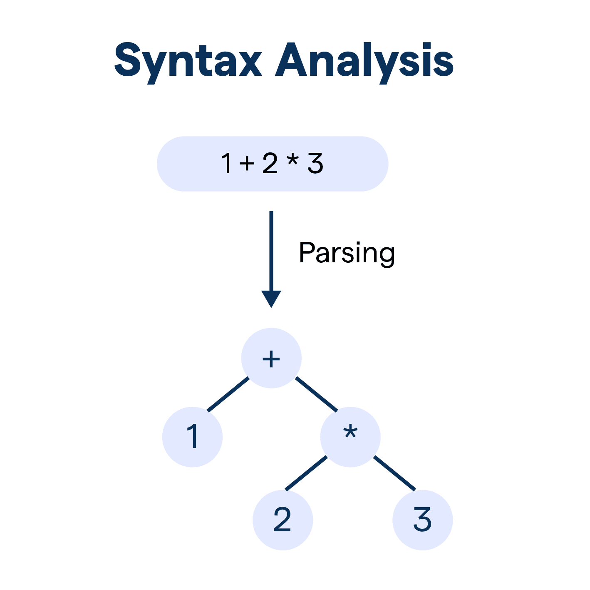

Syntax Analysis

Syntax analysis, or parsing, follows lexical analysis. It takes the stream of tokens generated in the previous stage and checks if they conform to the grammatical rules of the programming language. This involves analyzing the structure and relationships between tokens to ensure they form valid statements and expressions.
Example:
Consider the token stream generated from the previous example:
[keyword:int] [identifier:score] [operator:=] [integer:75] [separator:;]
The syntax analyzer would verify that this sequence adheres to the rules for variable declaration, ensuring an identifier follows the keyword "int", an assignment operator follows the identifier, and an integer value follows the assignment operator.
Key Tasks of Syntax Analysis:
- Grammar Checking: Verifying the token arrangement against the language's grammar rules.
- Error Detection and Reporting: Identifying and reporting syntax errors, including incorrect token order or missing components.
- Abstract Syntax Tree (AST) Creation: Generating a tree-like representation of the code's structure, capturing the hierarchical relationships between tokens.
Examination Technique:
When questions involve syntax analysis:
- Apply Grammar Rules: Explicitly demonstrate how the token stream conforms to or violates specific grammar rules.
- Draw ASTs: Practice constructing ASTs to visualize the code's structure and show your understanding of the parsing process.
Common Misconceptions:
- Syntax Errors are the Only Errors: While syntax analysis catches grammatical errors, other errors like semantic or logic errors are detected in later stages.
- AST is the Final Code Representation: The AST is an intermediate representation used for further analysis and transformation in subsequent compilation stages.
Prevention Strategies:
- Understand Error Categories: Recognize that syntax analysis primarily addresses grammatical errors, while other error types exist.
- View AST as a Stepping Stone: See the AST as a structural foundation for generating and optimizing code in later stages.
Memory Technique:
Think of syntax analysis as a "grammar-checking" stage, similar to how we check for grammatical correctness when writing.
Synthesis:
Syntax analysis builds upon lexical analysis by ensuring the token stream is grammatically correct and generates the AST, a crucial intermediate representation for further processing.
Back to Stages of Compilation